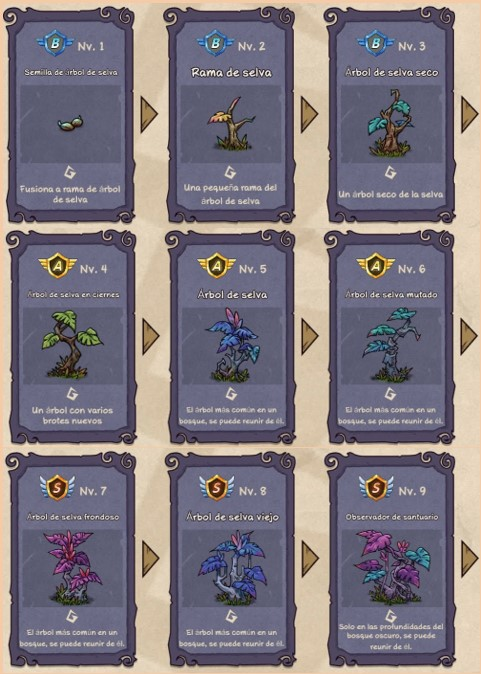

Milagro
Esta sección es bastante amplia y encontramos muchos elementos que se relacionan entre ellos.
Flores sagradas
Las Flores sagradas se pueden obtener de muchos elementos. De los pétalos que vuelan esporádicamente en la pantalla. Salen alrededor de las Cuevas de duende. Al recolectar las ramitas que surgen al tocar troncos o al juntar las ramitas, los troncos también los podemos conseguir ataúd ancestral. También pueden surgir al recolectar los huesos de animal salvaje, las hojas del árbol de sabiduría. Al poner a los monstruos a recolectar estas flores se obtienen Bolas sagradas. Los niveles de bola sagrada depende del nivel de la flor sagrada.
Seta
Las semillas de seta las podemos conseguir al poner a los monstruos a recolectar de los niveles superiores de setas o al juntar el nivel 2 de semilla desconocida. A su vez se pueden conseguir setas de fuego ch de los charcos de agua o las setas venosa ch de la pscina (Milagro-Agua). Ya que estos dos niveles de Agua si no se fusionan rápidamente se transforman.
Suculentas
Las suculentas salen en los alrededores de Espinas, o al tocar espinas o al poner a los monstruos a recolectar de ellas.
Cueva de duende
Se obtienen al tocar Stonehenge o al recolectar de los huesos de animal salvaje. También pueden salir en los cofres gratis.
Árbol de selva
Las semillas se obtienen de poner a los monstruos a recolectar de las Plantas misteriosas.
Arbol purificador
Hay elementos que si no se utilizan rápidamente como las alguitas se transforman en césped marchito. Si se combina o se lo recolecta se obtiene la semilla de árbol puro. El césped marchito también salen alrededor de los Masticadores, Piedra de runa o Flor maldita.
Meteoritos
Los meteoritos surgen en los alrededores de Agua a partir del nivel 4, Charca brillante. Al recolectarlo produce Venas mineral.
Vena Mineral
HLas obtenemos principalmente al recolectar los meteorito, también pueden aparecer en los Cofre gratis.

Arbol de sabiduria
Se obtienen de sus propias hojas de sabiduría. De las hojas de sabiduría al recolectarlas puden salir varios objetos como monedas o Flores sagradas. Si se reúnen obtendremos Semilla de sabiduría solamente.

Agua
Se puede obtener al tocar la Selva tropical.
Espinas
Se obtienen al obtener el nivel cuatro de Vid, Cabaña de vides. Al poner monstruos a recolectar dan semillas de suculentas. Ademas en sus alrededores pueden surgir diferentes niveles de suculentas. El nivel 6, Abrazo de la muerte, eventualmente brilla y al tocarla podemos obtener huevos de cabra.
Algas Marinas
Se recolectan de los charcos de Agua. . El primer nivel, Algas marinas si no se combina rápidamente se transforma en césped marchito.
Estrella de mar
Se obtiene al tocar niveles superior de Algas marinas o al recolectar de ellas.
Cascara
Surgen en las cercanías de las Estrella de mar.
Coral
Aparecen al combinar las cáscaras.
Bandera de batalla
Aparecen al combinar copas de oro.
Reliquia de la union
Al crearse y tocar la Espada de gloria. Al recolectar de ella podemos obtener cofre gratis o flor sagrada.